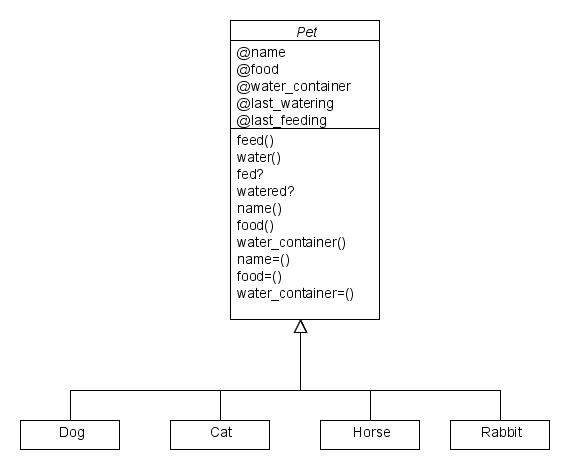

The close date of the assignment has passed. You can no longer submit an answer.
|
Title
|
Assignment 2
|
|
Due
|
Feb 9, 2009 5:00 pm
|
|
Status
|
In progress
|
|
Grade Scale
|
Ungraded
|
|
Modified by instructor
|
Feb 4, 2009 1:33 pm
|
Instructions
Implementing a class library
In the first lecture, we discussed the design of a pet class. For your
convenience I have repeated the story and the UML diagram below:
Background Story:
Mary: Daddy, can I have another pet?
Dad: You already have a dog, a mouse and a hamster.
Mary: But I want to get a rabbit too!
Dad: Do you realize that how much more work and expense that will be?
Mary: But I will take good care of it and give it a nice name!!
Dad: You will have to prove it for me. Also, every new kind of pet
requires special ways to be fed and watered. You will have to
learn how to care for it properly.
Mary: I will, I will. I'll figure out it out and give it food and
water every day.
Dad: But you do not have that many animals and you get so mixed up
with those you do have. Just tonight you gave the cat dog
food and put the hamster water bottle in the bird cage.
Mary: I get all mixed up sometimes.
Dad: But unless you can prove that you can take care of the ones you
have, I am not buying you any other kind of pet.
Mary: Maybe if you could write a program to remind me it would be
easier.
Dad: I will talk to my students and see if they could make a
tamagotchi for you.
Class Design
Description of the Assignment:
The goal of this assignment is to develop a file called pet.rb which contains the Ruby code for implementing the 4 classes: Dog, Cat, Horse, and Rabbit as well the abstract class Pet.
The class definition will need to implement the attributes and the
methods as shown in the design. The four classes are to inherit
the methods and attributes of the abstract class. Use the interactive
mode of Ruby to test your class definition and submit the pet.rb file to
your drop box.
The predicate methods that check whether or not the pet has been fed or
watered should use a simple comparison of the current time (written in
Ruby code as Time.now) against the last time the pet has been fed or
watered. If that difference is less than 24hrs then we can assume the
pet has not been fed. Time.at(0) will return 31 Dec 1969 which could be
useful when initializing any time variable/attribute.
Hint: The Time class is built into the standard Ruby library. Time.now
will provide the current time. This quantity can be assigned to a
variable and if you subtract two values of time you will get the
difference measured in seconds.
If implemented correctly, your class definition should produce output
under irb that is similar to the following screen shot:
C:\A201>irb
irb(main):001:0> require 'pet.rb'
=> true
irb(main):002:0> pet1 = Horse.new('Flash')
=> #<Horse:0x2cd3d84 @food="hay", @last_watering=Wed Dec 31 19:00:00 -0500 1969, @name="Flash", @wat
er_container="trough", @last_feeding=Wed Dec 31 19:00:00 -0500 1969>
irb(main):003:0> pet1.watered?
=> false
irb(main):004:0> pet1.water
Refilling the water trough for Flash
=> Sun Feb 01 21:17:34 -0500 2009
irb(main):005:0> pet1.watered?
=> true
irb(main):006:0> pet2 = Cat.new("Fluffy")
=> #<Cat:0x2cccda4 @food="cat food", @last_watering=Wed Dec 31 19:00:00 -0500 1969, @name="Fluffy",
@water_container="dish", @last_feeding=Wed Dec 31 19:00:00 -0500 1969>
irb(main):007:0> pet2.fed?
=> false
irb(main):008:0> pet2.feed
Giving Fluffy some cat food
=> Sun Feb 01 21:22:22 -0500 2009
irb(main):009:0> pet2.fed?
=> true
irb(main):010:0> pet3 = Rabbit.new("Peter")
=> #<Rabbit:0x2cc5fe0 @food="rabbit pellets", @last_watering=Wed Dec 31 19:00:00 -0500 1969, @name="
Peter", @water_container="bottle", @last_feeding=Wed Dec 31 19:00:00 -0500 1969>
irb(main):011:0> pet3.fed?
=> false
irb(main):012:0> pet3.feed
Giving Peter some rabbit pellets
=> Sun Feb 01 21:24:20 -0500 2009
irb(main):013:0> pet3.fed?
=> true
irb(main):014:0> pet3.food
=> "rabbit pellets"
irb(main):015:0> pet3.food
=> "rabbit pellets"
irb(main):016:0> pet2.food
=> "cat food"
irb(main):017:0> pet1.food
=> "hay"
irb(main):018:0> pet1.water_container
=> "trough"
irb(main):019:0> pet2.water_container
=> "dish"
irb(main):020:0> pet3.water_container
=> "bottle"
irb(main):021:0> quit
C:\A201>
Extra credit:
In the above example, pet objects are created in this manner:
pet1 = Horse.new("Black Beauty")
pet2 = Dog.new("Spot")
pet3 = Cat.new("Buffy")
pet4 = Rabbit.new("Thumper")
Submit another version of pet.rb in which there is only one class Pet. Instances of this class are to be created in this manner:
pet1 = Super_Pet.new("Black Beauty",:horse)
pet2 = Super_Pet.new("Spot",:dog)
pet3 = Super_Pet.new("Buffy",:cat)
pet4 = Super_Pet.new("Thumper",:rabbit)
Please adjust the rest of the methods so that they will produce the same
output as that shown in the irb test given above. Submit your code for
this version in your drop box under the name superpet.rb
Submission